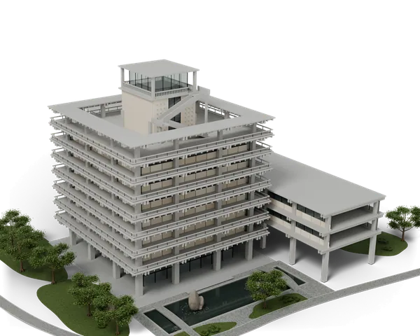

DESIGN / ОБЛИЦОВКА
От структуры
к материалу.
Тёплая поверхность, глубина стекла и точность деталей. Знакомая архитектура получает свой характер.
Прокручивайте вниз, чтобы раскрыть материал.
Вверх — чтобы вернуться.
Подготавливаем кадры…

KAGAWA, 1958 / KENZO TANGE00 / 100